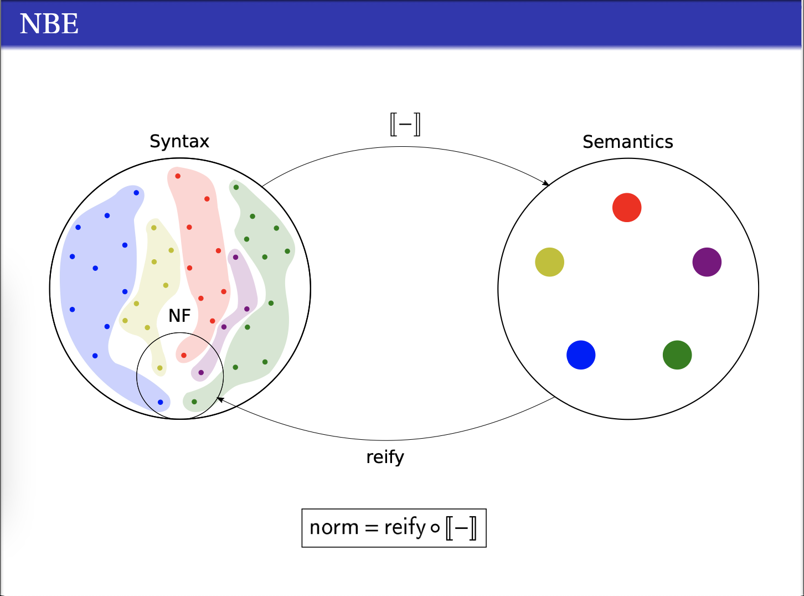

9/14: Up to Speed on Sterling & Spitters
Table of Contents
1 Reminders of some notions from my first chapter
Review the category of contexts and substitutions, I can do this live.
2 The Yoneda embedding and normalization by evaluation
2.1 Normalization? Evaluation?
Normalization by evaluation is a technique used to demonstrate normalization– the property that all terms have a normal form–for some lambda calculus. Andreas Abel renders the technique very clearly1: Normalization is the process of bringing an open term (with unknowns) to a special kind of fixed point. A similar notion is evaluation, the process of bringing a closure, namely an open term paired with a substitution closing it, to a canonical form comprised entirely of constructors.
Normalization by evaluation borrows an exist evaluator for some sufficiently expressive host language and uses it to normalize an open expression in the guest language we're interested in. The basic plot outline is this, each step paired with the relevant code from an instance2 of normalization with the host being Standard ML and the guest being the simply typed lambda calculus:
Create in the host language an internal representation of the guest language syntax and type structure:
datatype ty = Basic of string | Arrow of ty * ty | Prod of ty * ty datatype tm = var of string | lam of string * tm | app of tm * tm | pair of tm * tm | fst of tm | snd of tm
Building a semantic model (a la actions) of the guest language in terms of host language constructs:
datatype sem = LAM of (sem -> sem) | PAIR of sem * sem | SYN of tm
Here, our model expresses lambda expressions in STLC as actual ML functions and pairs as actual ML pairs. We also allow for embedding syntax terms of our base type, which have no further structure, into the semantics.
- Defining a mutually recursive pair of type-indexed operation families called reification and reflection, detailed in the next section, whose composition acts as a normalization function.
- Compose reification with reflection to get a normalization function for terms in the guest language.
2.2 Reflection, reification

Reflection is the operation which takes a syntactic lambda term, namely
something in tm, and produces the corresponding semantic representation in
sem. The instance from Wikipedia features the following reflection operation
defined mutually with reification:
(* reflect : ty -> tm -> sem *)
fun reflect (Arrow (a, b)) t =
LAM (fn S => reflect b (app t (reify a S)))
| reflect (Prod (a, b)) t =
PAIR (reflect a (fst t)) (reflect b (snd t))
| reflect (Basic _) t =
SYN t
(* reify : ty -> sem -> tm *)
and reify (Arrow (a, b)) (LAM S) =
let x = fresh_var () in
lam (x, reify b (S (reflect a (var x))))
end
| reify (Prod (a, b)) (PAIR S T) =
pair (reify a S, reify b T)
| reify (Basic _) (SYN t) = t
I'll start my explanation of this with reification, because it will come first in the normalization function we're building. In its first case, we want to reflect a syntactic function (something of arrow type) into our semantics. To do so, we create a new ML function (with a lambda expression) which reflects into the semantics the result of applying the syntactic function to the reification of its parameter. This resembles the usual eta-expansion for terms of function type, in which we take \( f: A \rightarrow B\) to the term \( \lambda a.\, f a \). The pair case has a similarly eta-expansive flavor. The case for the base type just embeds the term into the semantics.
Reification is just like reflection but with the parity of reflection/reification calls flipped everywhere. As before, for function types we perform something like eta-expansion; only here we can't rely on the meta-language to handle variable freshness issues and we have to allocate hitherto-unbound variables ourselves. Pairs are similar, without the variable complication. The case of the base type amounts to undoing the embedding performed by reflect.
One can show that the composition fun t. reify (reflect (t)) is a normalization
function for the simply typed lambda calculus.
2.3 Back to SterSpit
The first big claim in SterSpit is that a special version of the Yoneda embedding (with more intensional flavor) defines a reflection operation from the syntactic category into its category of presheaves. SterSpit promise a corresponding reification operation to complete the normalization by evaluation story, but delay its introduction until a few sections past what I've managed to understand so far. For now, we have a problem.
3 A pickle: too much quotienting
The definition of the syntactic category (category of contexts and substitutions) given in the chapter I wrote a few weeks ago has for its equations governing equality of morphisms those given by the "substitution lemma." It turns out that this identifies far too many terms for our uses. In particular, terms which are related by the various beta rules are identified, meaning that a normal form (a term for which no further beta reduction can be performed) is identified with its (manifestly not normal) beta-predecessor. The upshot is that we can't isolate the normal forms as a class of terms, which totally bungles our whole project of investigating which terms (all of them) of the simply typed lambda calculus have normal forms. To spell it out: the normalization by evaluation function SterSpit propose is actually equal to the identity on the syntactic category. The whole point of using the gluing construction is to get us out of this situation by introducing more computational information that allows us to distinguish terms from their beta-ancestors and beta-posteriors.
4 Unpickling ourselves: the category of renamings
As an alternative to the misbehaving category of contexts and substitutions, we will work with the catetory of renamings. In simple terms, this category has as its objects all contexts over our types and whose morphisms are type-preserving changes of variable from one context to another. Unfortunately as I found while typing this up, the simple rendition is somewhat ill-specified. Fiore (2002) defines this category as the opposite of the comma category \( \mathfrak{i} \downarrow \mathfrak{T} \) where \( \mathfrak{i} \) is the functor embedding the category \( \mathbb{F} \) of finite sets of variables (drawn from the supply of our algebraic theory) into \( \mathfrak{Set} \) and \( \mathfrak{T} \) is the constant functor for our set of types \( \mathfrak{T} \). Concretely, its objects are maps \( \Gamma : V \rightarrow \mathfrak{T} \), i.e., exactly contexts assigning types to finitely many variables. The morphisms \( \Gamma' \rightarrow \Gamma \) (of the opposite we'll be working with) are functions \( \rho : \text{dom}(\Gamma) \rightarrow \text{dom}(\Gamma') \) such that \(\Gamma = \Gamma' \circ \rho \), i.e., the morphisms are type-preserving changes of variables. The reason we work with the opposite of this category is so that the action of the category of the renamings acts contravariantly on the clones of the syntactic category it embeds in; i.e., we want the arrows to line up with the syntactic category.
5 The relative hom functor
Sterling & Spitters follow Fiore in defining the "relative hom functor", which they suggestively call \(\mathfrak{Tm} : \text{Cl}_{\Sigma} \rightarrow {\text{Ren}_\Sigma}^{\mathfrak{Set}} \). The suggestion hinted at by the name, that this functor defines a presheaf of open terms, turns out to be a small lie. Let's look at what it actually does. \(\mathfrak{Tm}\) is defined by adjusting the hom functor (i.e, the Yoneda embedding) by precomposition with the inclusion of the category of renamings into the category of (contexts and) substitutions. In particular, SterSpit define \(\mathfrak{Tm}(\Delta) = \text{Cl}_{\Sigma} [i(-), \Delta]\). In plain terms, \( \mathfrak{Tm}(\Delta)\) takes a context in the category of renamings to the substitutions on terms out of \(\Delta\) (recalling that the action of the category of contexts on its clones is contravariant). This can be construed as a presheaf of open terms. For any type \( \tau \) and any context \( \Gamma \), the morphisms in this set are (in their totality):
- Single substitutions \( [t / x] \) where \( \Gamma \vdash t : \tau \). (Note that this includes renamings); and,
- Context weakenings \( \hat{y} \)
Ignoring the weakenings, we see that we have a presheaf of open terms closed by \( \Gamma \).
The suggestion does break down when generalizing the target context from a single \( \tau \). For contexts \( \Delta \) and \( \Gamma \), we have \(\mathfrak{Tm}(\Delta)(\Gamma) = \text{Cl}_{\Sigma} [i(\Gamma), \Delta]\), the context \( \Gamma \) just falls through the inclusion and we get the substitutions \( \gamma^{*} : \Delta \vdash \tau \rightarrow \Gamma \vdash \tau \) for arbitrary \( \tau \). Now here comes the (small) lie: the morphisms in the syntactic category aren't just single substitutions, but also (as before) single omissions \( \hat{x}\) and all the compositions of these two classes of maps.